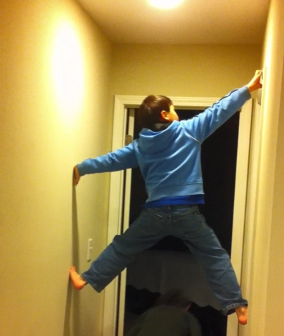

Transitions
 Kendrick (standing) and Keaton (in water) at the creek that runs by our neighborhood. Every time we went, Keaton “accidentally” fell in.
Kendrick (standing) and Keaton (in water) at the creek that runs by our neighborhood. Every time we went, Keaton “accidentally” fell in.
I live in a large neighborhood in a suburb outside of Nashville. It’s a wonderful neighborhood that has been a great place for my sons to grow up. There’s a creek that runs along one end and a trail that encircles it. I’ve walked that trail more times than I can count and never grow tired of it. On a recent trek along the trail, I walked past a neighbor’s house and noticed a new addition to their backyard. It was a kind of obstacle course made of rope suspended between two trees. When I looked closer, I saw the label “American Ninja Warrior.”
I couldn’t help but smile. My sons had been obsessed with that show when they were little. If you don’t know it, it is a reality competition show that started in Japan but now has fans and competitors all over the world. Athletes must run, jump, climb, and swing through a crazy obstacle course. Although the courses frequently change, the “Spider Wall” is a regular. The contestants use a trampoline to jump and plant themselves between two walls. Using strength and skill, they must shinny their way to the end of the wall where another challenge awaits. If they fall, and many do, they land in the water and are eliminated. Those who can hang on through the course must hit a buzzer before time runs out. Athletes with the fastest times move on to the next level.
My sons never missed an episode of Ninja Warrior, and they were anxious to be old enough to compete. I made elaborate courses for them that ran through the house and into the backyard. We even had a spider wall complete with a small trampoline. They would each take their turn on the course as I timed them.
 Keaton (age 5) takes a turn on the spider wall.
Back then the house was always a wreck. In addition to the homemade ninja course, there was always a partially built puzzle or LEGO masterpiece on the dining room table. Tents made from blankets were a common sight in the living room. The noise could be deafening. One day school was out for some reason, so I was home with them but trying to work. I had been in my office for a while when I realized the house was quiet—always a bad sign. I rushed out to find them rappelling off the second-floor landing down into the living room. For “safety” they had piled every pillow and cushion they could find on the floor to catch them if they fell.
Those were crazy and exhausting days. It seemed that I was constantly in demand by one or both of them. They always needed me for something, and sometimes I couldn’t even get five minutes to myself. Nearly everything either of them said started with, “Mom, can you…?” I’ll admit, there were times I longed for them to grow up and be able to take care of themselves.
Fast-forward a decade and my wish has come true. My boys are now 18 and 20. Although they are both home from college for the summer, things are nothing like the days long ago. Even when all of us are home, the house is often quiet. No more running wild across a homemade ninja course. The house is a lot cleaner too. They don’t have to be reminded to put their shoes away or put their dishes in the sink.
These days they rarely need my help with anything. Instead, they are the ones reaching up high to get something for me or bringing in a heavy box so I don’t have to struggle with it. Kendrick built the website I use to post these blogs, and Keaton teaches me how to use my phone whenever I get a new one. It’s a strange feeling. Sometimes it seems I need them more than they need me.
As I walked past the store-bought ninja obstacle course, I was a little sad. I realized I missed my younger boys and those crazy, hectic days. I missed being needed.
I finished my walk and returned home to find Keaton sitting on the couch with his computer. He had started his summer job and had paperwork to complete. “Mom, can you help me? I don’t know some of the stuff they are asking me for.”
I’m sure I smiled as I sat down beside him. Okay, I thought, they aren’t completely grown yet. The transition to independence may be well underway, but it isn’t quite complete. I took the laptop from my youngest son and promised myself that I would savor these waning days of childhood.
Quick Links
| Pages | Other Pages | |
|---|---|---|
| Home | The Agent Orange Trilogy | |
| The RAM Blogs | Edge of Justice | |
| Books | Help | |
| Media | ||
| About Me | ||